Combined Factors - Combine scores - Big Dataset
Contents
Preparation
Retrieve the big data
load('../Big Data/data_equity_list.mat'); load('../Big Data/data_historical_data_jan16.mat'); equity_list = equity_list(1:size(storage0,1),:); equity_list_large = equity_list(strcmp(equity_list(:,2),'US'),:); history_large = storage0(strcmp(equity_list(:,2),'US'),:); clear storage0; clear equity_list; equity_list_large = equity_list_large(not(cellfun(@isempty,history_large(:,1))),:); history_large = history_large(not(cellfun(@isempty,history_large(:,1))),:);
take data sample, load data & the list
index_large = datasample(1:length(equity_list_large),length(equity_list_large),'Replace',false);
px_large = fun_load_price_large(history_large, equity_list_large, index_large);
px = fun_clean_data(px_large);
list = equity_list_large(index_large,:);
load observations
mom_ts = fun_calculate_mom(px_large); pb_ts = fun_load_observations_large(history_large, equity_list_large, index_large,'pb'); cap_ts = fun_load_observations_large(history_large, equity_list_large, index_large,'cap'); beta_ts = fun_load_observations_large(history_large, equity_list_large, index_large,'beta'); grossmargin_ts = fun_load_observations_large(history_large, equity_list_large, index_large,'gm'); turnover_ts = fun_load_observations_large(history_large, equity_list_large, index_large,'turnover'); roa_ts = fun_load_observations_large(history_large, equity_list_large, index_large,'roa'); leverage_ts = fun_load_observations_large(history_large, equity_list_large, index_large,'leverage');
calculate score
score_mom_ts = fun_calculate_score(mom_ts,list,'sectorsort',px); score_pb_ts = -fun_calculate_score(pb_ts,list,'sectorsort',px); score_cap_ts = -fun_calculate_score(cap_ts,list,'sectorsort',px); score_beta_ts = -fun_calculate_score(beta_ts,list,'sectorsort',px); score_leverage_ts = -fun_calculate_score(leverage_ts,list,'sectorsort',px); score_roa_ts = fun_calculate_score(roa_ts,list,'sectorsort',px); score_grossmargin_ts = fun_calculate_score(grossmargin_ts,list,'sectorsort',px); score_turnover_ts = fun_calculate_score(turnover_ts,list,'sectorsort',px); score_quality_ts = score_leverage_ts+score_roa_ts+score_grossmargin_ts+score_turnover_ts; score_quality_ts = fun_combine_score(score_quality_ts);
Trim
score_mom_ts = score_mom_ts(120:end-5);
score_pb_ts = score_pb_ts(120:end-5);
score_cap_ts = score_cap_ts(120:end-5);
score_beta_ts = score_beta_ts(120:end-5);
score_quality_ts = score_quality_ts(120:end-5);
score_ts = {score_mom_ts; score_pb_ts; score_cap_ts; score_beta_ts; score_quality_ts};
px = px(120:end-5);
Combine score
score_weight = [0.2 0 0.4 0.1 0.3]; score_combined_ts = score_mom_ts*score_weight(1) + score_pb_ts*score_weight(2) + score_cap_ts*score_weight(3) + score_beta_ts*score_weight(4) + score_quality_ts*score_weight(5); score_combined_ts = fun_combine_score(score_combined_ts); portfolio_weight_eq_weight_ts = fun_portfolio_weight_sector_neutral(score_combined_ts,'equalweight'); portfolio_rt_ts = fun_portfolio_return(px, portfolio_weight_eq_weight_ts); benchmark = [100; 100*exp(fts2mat(cumsum(portfolio_rt_ts)))]; benchmark_ts = fints(px.dates, benchmark,'EqualWeightIndex');
Score weighted full
risk neutral
portfolio_weight_ts = fun_portfolio_weight_sector_neutral(score_combined_ts,'longonly'); portfolio_cap_ts = fun_sequential_backtest_autoadjust(100, px, benchmark_ts, portfolio_weight_ts,false); corrcoef(fts2mat(tick2ret(portfolio_cap_ts)),fts2mat(tick2ret(benchmark_ts))) sqrt(12)*sharpe(fts2mat(tick2ret(portfolio_cap_ts)),0) sqrt(12)*std(fts2mat(tick2ret(portfolio_cap_ts))) plot(cumsum(fts2mat(tick2ret(portfolio_cap_ts)))); hold on;
ans =
1.0000 -0.2668
-0.2668 1.0000
ans =
1.3578
ans =
0.0454
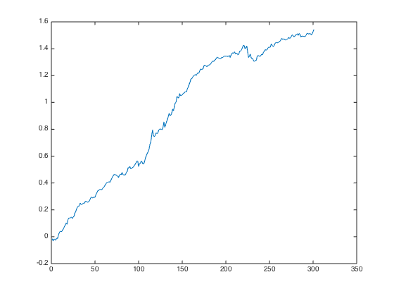 capital neutral
portfolio_weight_ts = fun_portfolio_weight_sector_neutral(score_combined_ts,'longonly'); portfolio_cap_ts = fun_sequential_backtest_partial(100, px, benchmark_ts, 1, portfolio_weight_ts,false); corrcoef(fts2mat(tick2ret(portfolio_cap_ts)),fts2mat(tick2ret(benchmark_ts))) sqrt(12)*sharpe(fts2mat(tick2ret(portfolio_cap_ts)),0) sqrt(12)*std(fts2mat(tick2ret(portfolio_cap_ts))) plot(cumsum(fts2mat(tick2ret(portfolio_cap_ts)))); hold on;
ans =
1.0000 -0.3610
-0.3610 1.0000
ans =
1.1387
ans =
0.0492
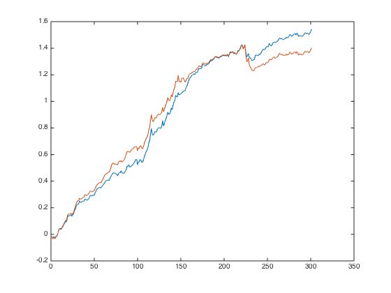 market neutral
portfolio_weight_ts = fun_portfolio_weight_sector_neutral(score_combined_ts,'longonly'); portfolio_cap_ts = fun_sequential_backtest_partial(100, px, benchmark_ts, 0.87, portfolio_weight_ts,false); corrcoef(fts2mat(tick2ret(portfolio_cap_ts)),fts2mat(tick2ret(benchmark_ts))) sqrt(12)*sharpe(fts2mat(tick2ret(portfolio_cap_ts)),0) sqrt(12)*std(fts2mat(tick2ret(portfolio_cap_ts))) plot(cumsum(fts2mat(tick2ret(portfolio_cap_ts)))); hold on;
ans =
1.0000 0.2493
0.2493 1.0000
ans =
1.5753
ans =
0.0474
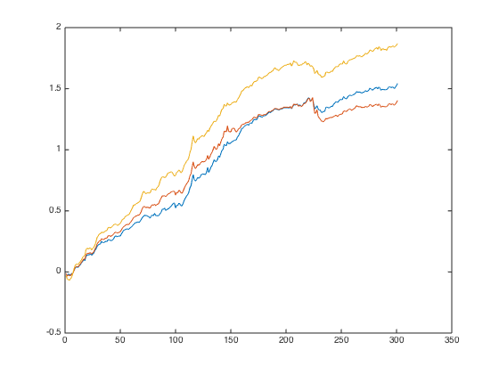 mix with market long
portfolio_weight_ts = fun_portfolio_weight_sector_neutral(score_combined_ts,'longonly'); portfolio_cap_ts = fun_sequential_backtest_partial(100, px, benchmark_ts, 0.75, portfolio_weight_ts,false); corrcoef(fts2mat(tick2ret(portfolio_cap_ts)),fts2mat(tick2ret(benchmark_ts))) sqrt(12)*sharpe(fts2mat(tick2ret(portfolio_cap_ts)),0) sqrt(12)*std(fts2mat(tick2ret(portfolio_cap_ts))) plot(cumsum(fts2mat(tick2ret(portfolio_cap_ts)))); hold off; snapnow;
ans =
1.0000 0.6487
0.6487 1.0000
ans =
1.5230
ans =
0.0603
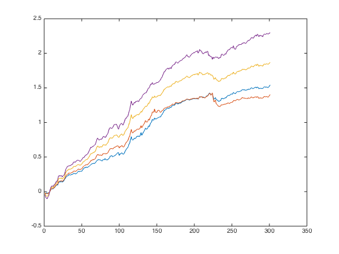 Topm Equal weighted
risk neutral
portfolio_weight_ts = fun_portfolio_weight_sector_neutral(score_combined_ts,'longonlym',0.5); portfolio_cap_ts = fun_sequential_backtest_autoadjust(100, px, benchmark_ts, portfolio_weight_ts,false); corrcoef(fts2mat(tick2ret(portfolio_cap_ts)),fts2mat(tick2ret(benchmark_ts))) sqrt(12)*sharpe(fts2mat(tick2ret(portfolio_cap_ts)),0) sqrt(12)*std(fts2mat(tick2ret(portfolio_cap_ts))) plot(cumsum(fts2mat(tick2ret(portfolio_cap_ts)))); hold on;
ans =
1.0000 -0.3536
-0.3536 1.0000
ans =
1.3058
ans =
0.0754
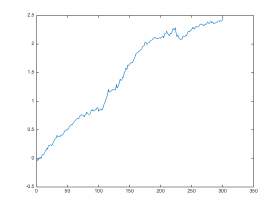 capital neutral
portfolio_weight_ts = fun_portfolio_weight_sector_neutral(score_combined_ts,'longonlym',0.5); portfolio_cap_ts = fun_sequential_backtest_partial(100, px, benchmark_ts, 1, portfolio_weight_ts,false); corrcoef(fts2mat(tick2ret(portfolio_cap_ts)),fts2mat(tick2ret(benchmark_ts))) sqrt(12)*sharpe(fts2mat(tick2ret(portfolio_cap_ts)),0) sqrt(12)*std(fts2mat(tick2ret(portfolio_cap_ts))) plot(cumsum(fts2mat(tick2ret(portfolio_cap_ts)))); hold on;
ans =
1.0000 -0.4022
-0.4022 1.0000
ans =
1.1041
ans =
0.0812
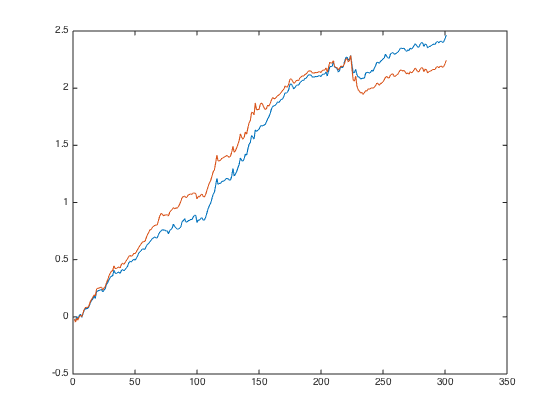 market neutral
portfolio_weight_ts = fun_portfolio_weight_sector_neutral(score_combined_ts,'longonlym',0.5); portfolio_cap_ts = fun_sequential_backtest_partial(100, px, benchmark_ts, 0.8, portfolio_weight_ts,false); corrcoef(fts2mat(tick2ret(portfolio_cap_ts)),fts2mat(tick2ret(benchmark_ts))) sqrt(12)*sharpe(fts2mat(tick2ret(portfolio_cap_ts)),0) sqrt(12)*std(fts2mat(tick2ret(portfolio_cap_ts))) plot(cumsum(fts2mat(tick2ret(portfolio_cap_ts)))); hold on;
ans =
1.0000 0.1705
0.1705 1.0000
ans =
1.5679
ans =
0.0754
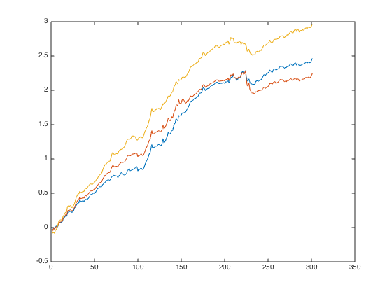 mix with market long
portfolio_weight_ts = fun_portfolio_weight_sector_neutral(score_combined_ts,'longonlym',0.5); portfolio_cap_ts = fun_sequential_backtest_partial(100, px, benchmark_ts, 0.75, portfolio_weight_ts,false); corrcoef(fts2mat(tick2ret(portfolio_cap_ts)),fts2mat(tick2ret(benchmark_ts))) sqrt(12)*sharpe(fts2mat(tick2ret(portfolio_cap_ts)),0) sqrt(12)*std(fts2mat(tick2ret(portfolio_cap_ts))) plot(cumsum(fts2mat(tick2ret(portfolio_cap_ts)))); hold off; snapnow;
ans =
1.0000 0.3101
0.3101 1.0000
ans =
1.6044
ans =
0.0782
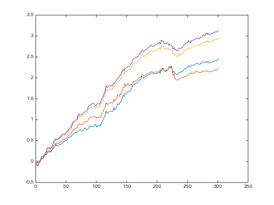 score weighted full is quite smooth. for top 0.5, the first 100 months looks odd..
Equal weighted score.
If I combined the score equally:
Combine score
score_weight = [1 1 1 1 1]; score_combined_ts = score_mom_ts*score_weight(1) + score_pb_ts*score_weight(2) + score_cap_ts*score_weight(3) + score_beta_ts*score_weight(4) + score_quality_ts*score_weight(5); score_combined_ts = fun_combine_score(score_combined_ts); portfolio_weight_eq_weight_ts = fun_portfolio_weight_sector_neutral(score_combined_ts,'equalweight'); portfolio_rt_ts = fun_portfolio_return(px, portfolio_weight_eq_weight_ts); benchmark = [100; 100*exp(fts2mat(cumsum(portfolio_rt_ts)))]; benchmark_ts = fints(px.dates, benchmark,'EqualWeightIndex');
risk neutral
portfolio_weight_ts = fun_portfolio_weight_sector_neutral(score_combined_ts,'longonly'); portfolio_cap_ts = fun_sequential_backtest_autoadjust(100, px, benchmark_ts, portfolio_weight_ts,false); corrcoef(fts2mat(tick2ret(portfolio_cap_ts)),fts2mat(tick2ret(benchmark_ts))) sqrt(12)*sharpe(fts2mat(tick2ret(portfolio_cap_ts)),0) sqrt(12)*std(fts2mat(tick2ret(portfolio_cap_ts))) plot(cumsum(fts2mat(tick2ret(portfolio_cap_ts)))); hold on;
ans =
1.0000 -0.2938
-0.2938 1.0000
ans =
1.2943
ans =
0.0447

capital neutral
portfolio_weight_ts = fun_portfolio_weight_sector_neutral(score_combined_ts,'longonly'); portfolio_cap_ts = fun_sequential_backtest_partial(100, px, benchmark_ts, 1, portfolio_weight_ts,false); corrcoef(fts2mat(tick2ret(portfolio_cap_ts)),fts2mat(tick2ret(benchmark_ts))) sqrt(12)*sharpe(fts2mat(tick2ret(portfolio_cap_ts)),0) sqrt(12)*std(fts2mat(tick2ret(portfolio_cap_ts))) plot(cumsum(fts2mat(tick2ret(portfolio_cap_ts)))); hold on;
ans =
1.0000 -0.5730
-0.5730 1.0000
ans =
0.8081
ans =
0.0537
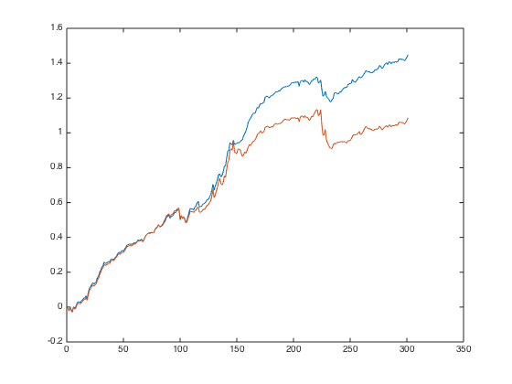 market neutral
portfolio_weight_ts = fun_portfolio_weight_sector_neutral(score_combined_ts,'longonly'); portfolio_cap_ts = fun_sequential_backtest_partial(100, px, benchmark_ts, 0.87, portfolio_weight_ts,false); corrcoef(fts2mat(tick2ret(portfolio_cap_ts)),fts2mat(tick2ret(benchmark_ts))) sqrt(12)*sharpe(fts2mat(tick2ret(portfolio_cap_ts)),0) sqrt(12)*std(fts2mat(tick2ret(portfolio_cap_ts))) plot(cumsum(fts2mat(tick2ret(portfolio_cap_ts)))); hold on;
ans =
1.0000 -0.0267
-0.0267 1.0000
ans =
1.4089
ans =
0.0440
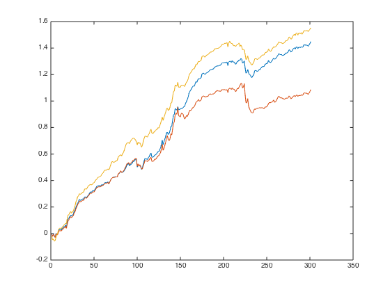 mix with market long
portfolio_weight_ts = fun_portfolio_weight_sector_neutral(score_combined_ts,'longonly'); portfolio_cap_ts = fun_sequential_backtest_partial(100, px, benchmark_ts, 0.75, portfolio_weight_ts,false); corrcoef(fts2mat(tick2ret(portfolio_cap_ts)),fts2mat(tick2ret(benchmark_ts))) sqrt(12)*sharpe(fts2mat(tick2ret(portfolio_cap_ts)),0) sqrt(12)*std(fts2mat(tick2ret(portfolio_cap_ts))) plot(cumsum(fts2mat(tick2ret(portfolio_cap_ts)))); hold off; snapnow;
ans =
1.0000 0.5108
0.5108 1.0000
ans =
1.5475
ans =
0.0512
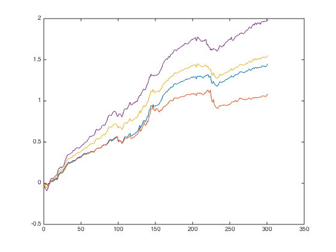